A brief walkthrough
Links Here
Show off Pictures
Talk about recommended activities
Practise Design
Use Cool Presentation Framework
And Why Not?
Navigate onwards to the restaurants to view and read about the restaurants and courses
Down Arrow for delicious Hungarian Cuisine
Including Michelin Bib Bourmand and Recommended Restaurants!
Located at the Lobby of Hotel Boscolo
Opposite our place of stay
Nope I could not afford to stay in Boscolo
Different Flavours, liked the pumpkin.
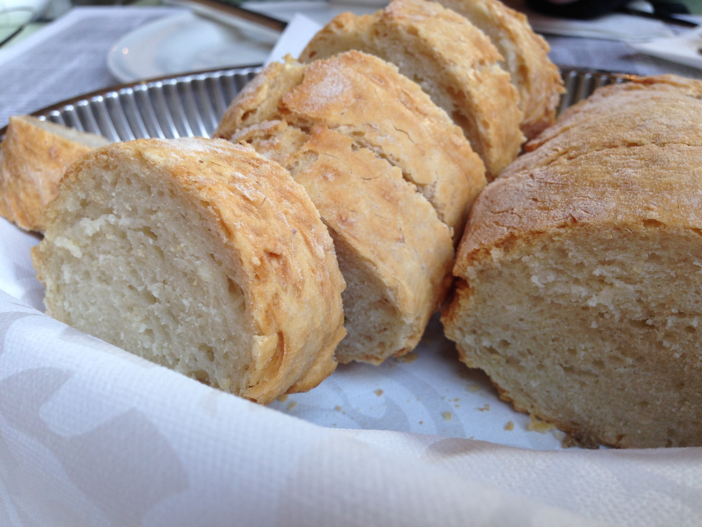I believe it was duck based, that is not a caterpillar
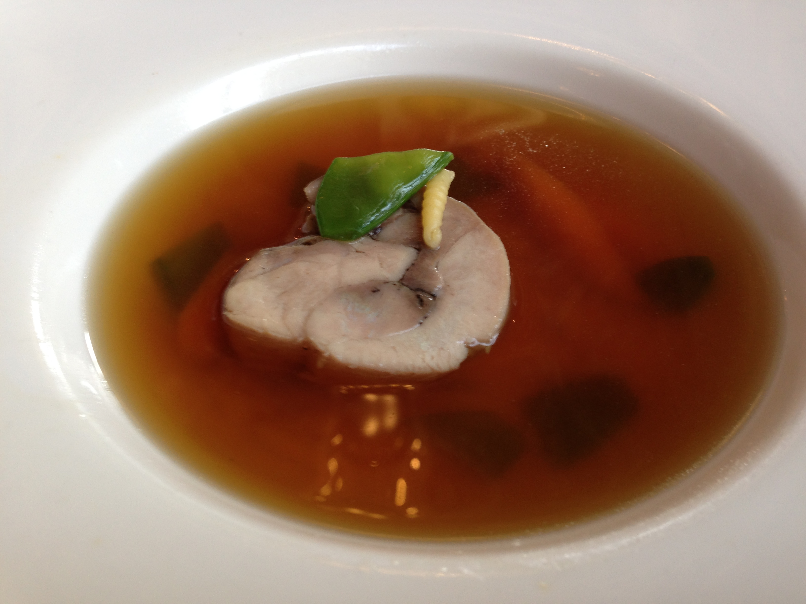Are we supposed to drink the egg like a shot?
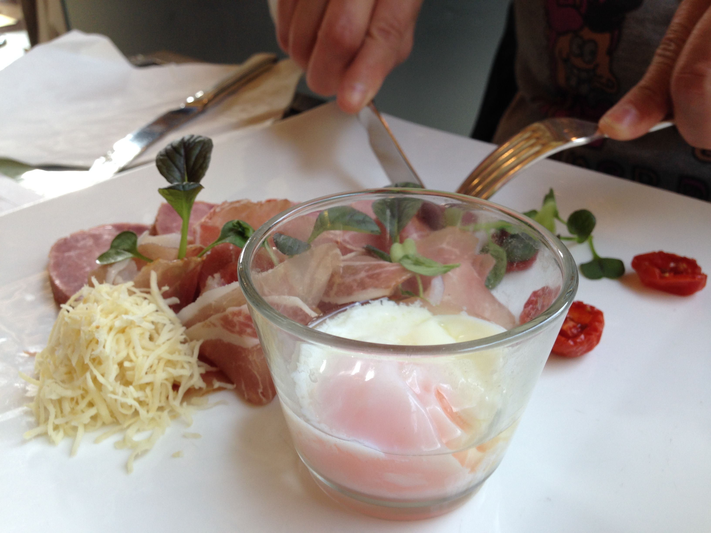Delicious Pork Trotters, over sorghum wheat
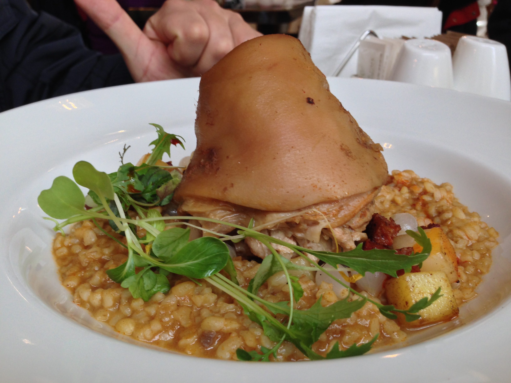Poppy strudel, nothing to do with the Cafe
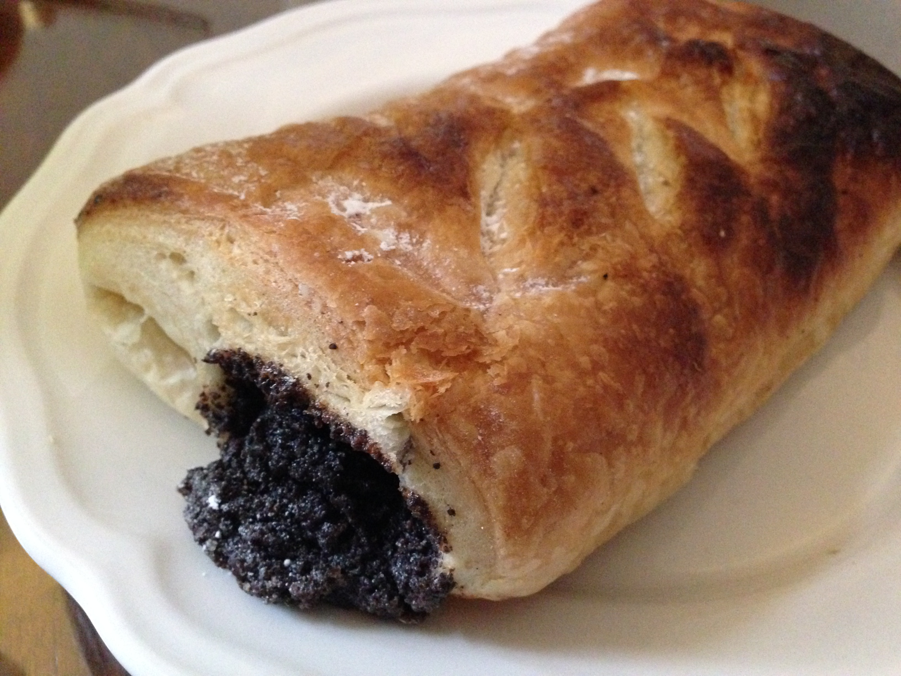A different one above each table
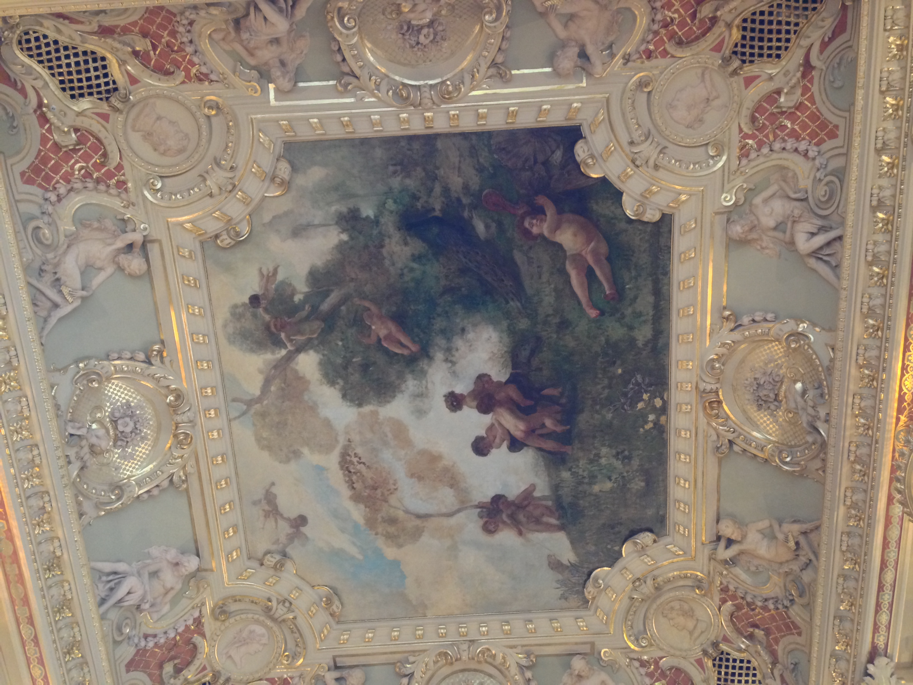New York, in Hungary, by an Italian Conglomeration
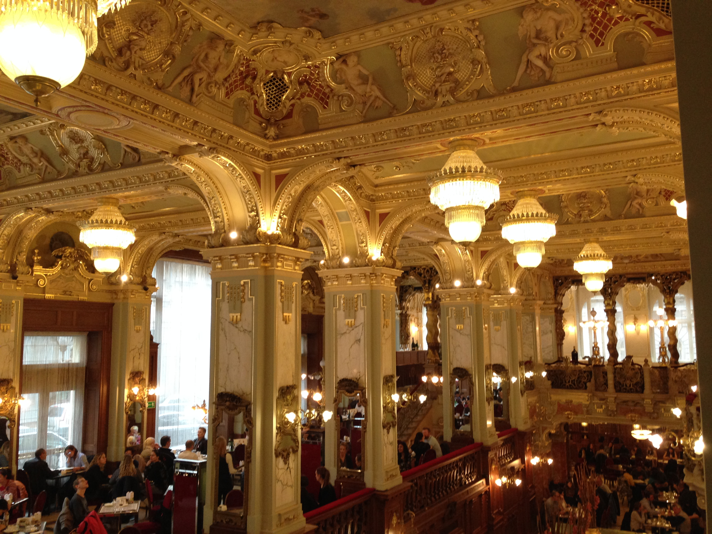Near the main metro hub at Deak Ferenc
Two stops away from home base
Metro Ticket Approximately 40 cents, and worth it
Literally Grandma's Veggie Soup
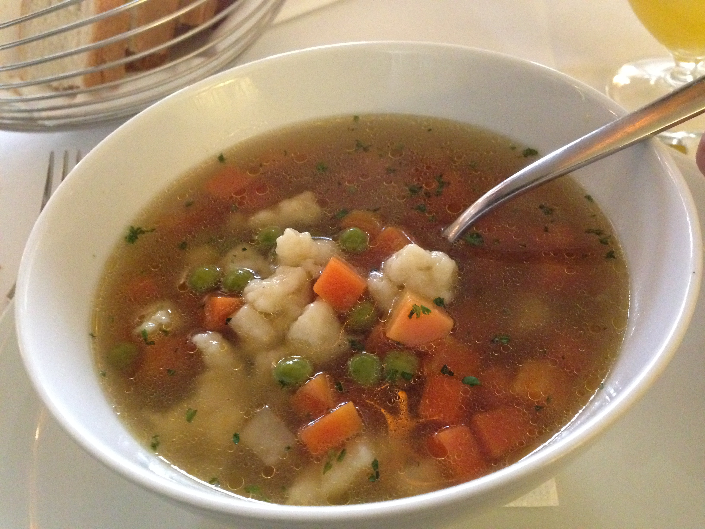Sister gave me half, at least I thought it was good
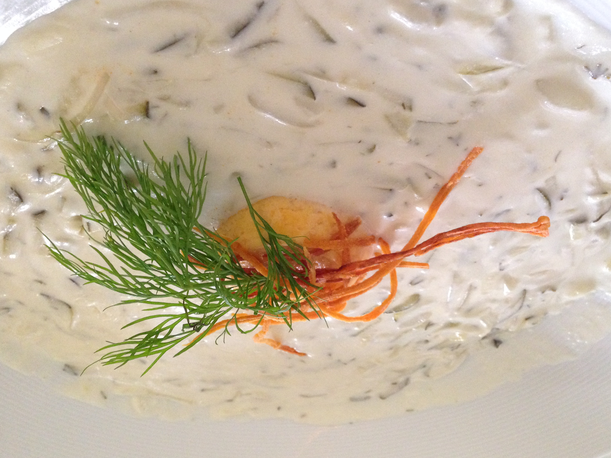Delicious crepe skins with chicken paprikash and dumpling pasta, only 2 on the plate though!
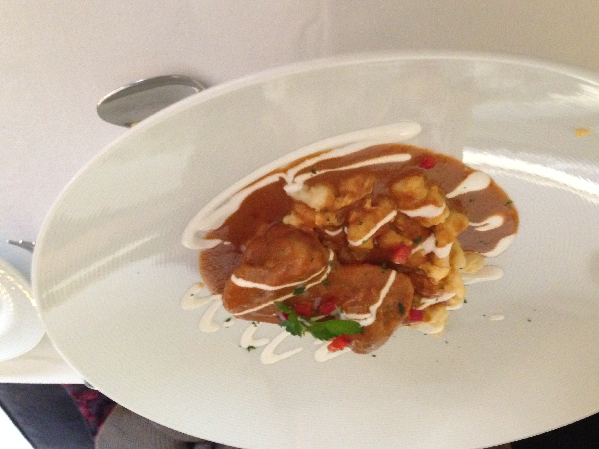Take away a man's (bread) pudding, and you leave him a quivering mass.
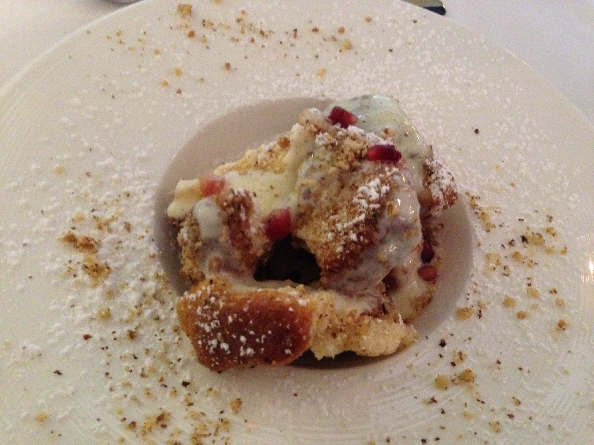Ye Olde Reliable Spongecake desert a la mode
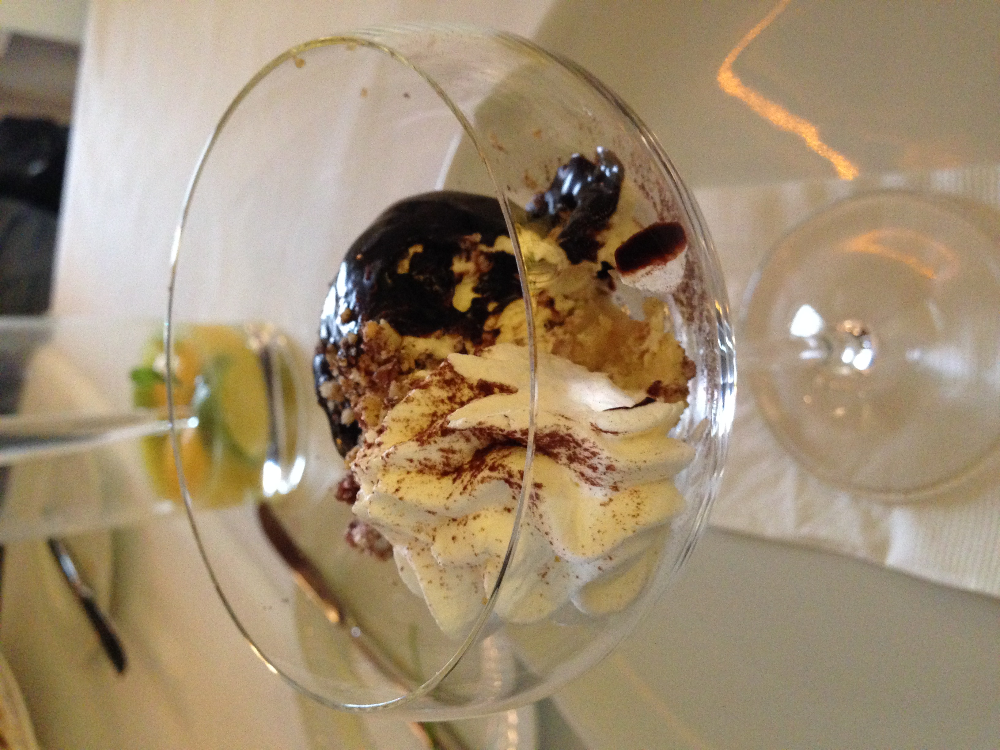At least the slogans made more sense than some I have seen back home
Fun Stuff Here
Placehold
Placehold
Placehold
Placehold